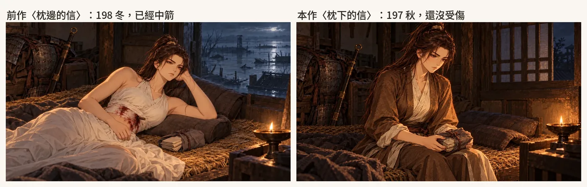
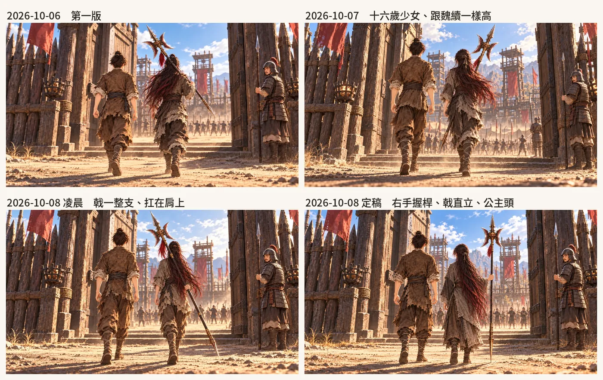
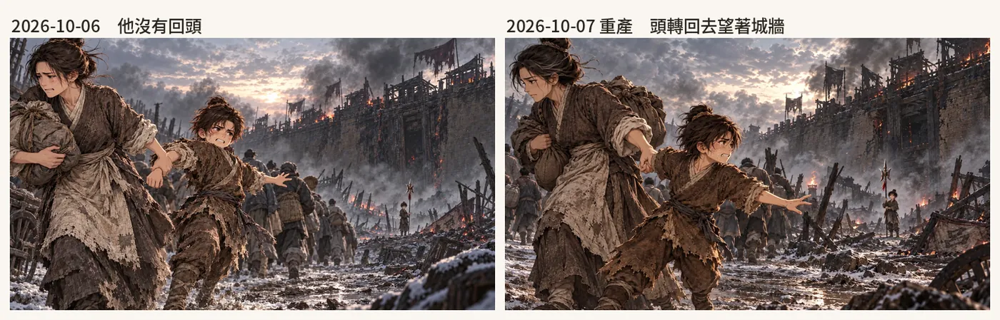
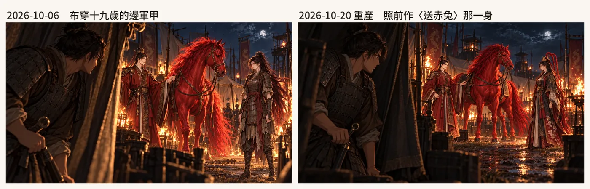
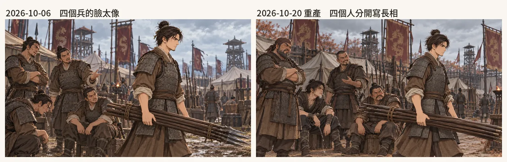
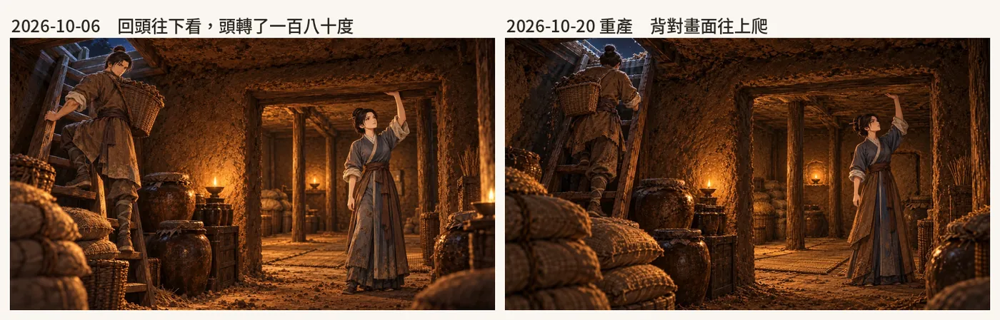
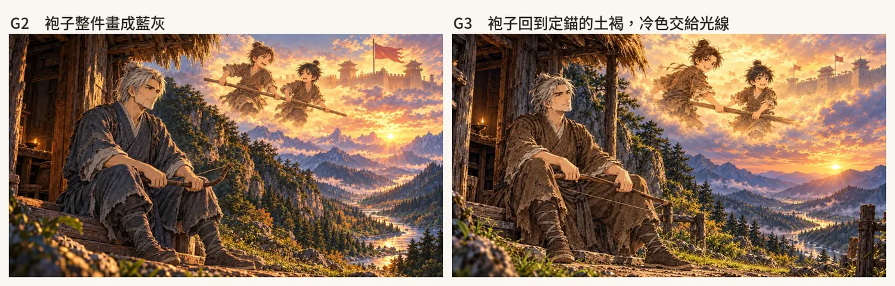
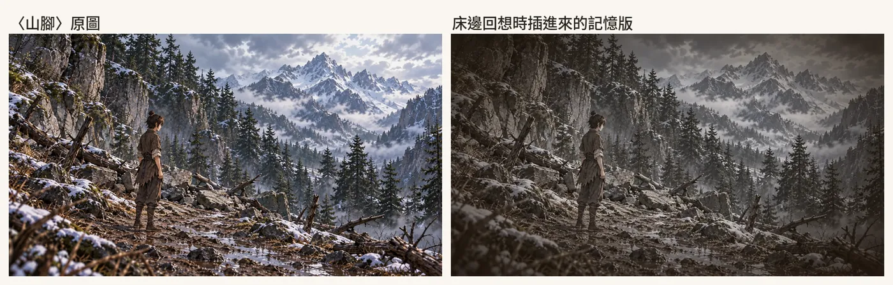

CG
《續》用的 CG 有兩種：前作（原作《仙泉．香布纏》）的 140 張直接沿用，另外新畫魏續視角的場面。新畫的場面檔有 90 個，其中 12 個是封面候選；2026-10-13 那時，遊戲裡用到的本作 CG 有 67 張。這一章寫新 CG 怎麼產、從原作帶過來的規矩，以及哪幾張重產過、為什麼。大部分規矩是做原作時，我驗收抓到錯以後定下來的；每一條都附上當時的例子，和《續》裡遇到的例子。
一張 CG 從場面檔開始
每一張新 CG 先寫成一個場面檔：library/場面/仙泉香布纏續/<id>.yaml。欄位有劇本那一行、在場（每個人的造型、站位、動作、表情、備註）、場景、參考（前作的 CG 或素材，每張附一句「這張只參考什麼」）、內容（時間、地點、畫面），最後是選定的那一張。〈地窖完工〉的在場欄長這樣：
在場:
- 名字: 嚴湘
造型: 嚴湘.常服
站位: 畫面中間偏右，裡間的門口
動作: 站直身子，頭頂離土頂還有一掌，一隻手扶著裡間門框的木柱
表情: 平靜、鬆了一口氣
備註: 二十七歲，灰青素布衣，袖子捲起、裙擺沾土
- 名字: 魏續
造型: 魏續.布袍
站位: 畫面左，木梯腳下
動作: 背對畫面、彎腰把最後一袋米靠牆放好（看不到臉）
表情: （看不到臉）
備註: 三十一歲，不穿甲：土褐舊粗布袍、袖子捲起、滿身土
場景: 地窖
產線是 xu/cg_xu.py（2026-10-06）。它讀場面檔，照在場每個人的造型去素材庫找定錨圖，加上場景定錨和參考欄的圖，每張圖寫一句「Image N 是誰、照它的什麼」，再接上場面的文字、燈的規則、瞳色規則、畫風，送產圖服務。每個場面預設產三張候選，存成 xu/cg/<id>_<字母>_v2.webp，旁邊一個同名的 JSON 記下實際送出的提示詞和參考圖，事後查得到每一張是怎麼來的。〈糧窖底下〉重產那一張實際送出的提示詞：
參考圖：Image 1＝魏續：魏續的定錨，長安扮成龐家僕人時（男性，深棕色眼睛，方臉短鬍渣，土褐舊粗布長袍、深褐布帶、綁腿布靴；**不穿甲**）；臉、髮型、衣服照它
Image 2＝嚴湘：嚴湘的定錨（茶褐色眼睛，木簪挽髻，灰青土褐素布衣）；臉、髮型、衣服照它
Image 3＝地窖的場景定錨（兩間土室、大人站得直、土壁、油燈；照它的空間與陳設）；臉、髮型、衣服照它
〈糧窖底下〉xu5_cellar
時間：初平元年（190），夜
地點：長安城南龐舒家的糧窖底下，正在往下挖的地窖
畫面：16:9 電影級場景 CG。地底下，一盞油燈照著剛挖出來的土壁。左邊男人背著一筐土爬木梯往上；右邊挖到一半的裡間，女人舉手貼著土頂量高度。米袋堆在一邊。燈只用東漢的油燈：青銅或陶的淺燈盞、一根燈芯、一小朵火，沒有玻璃燈罩、沒有紙燈籠
- **每個人這一張要畫出的動作、表情與服裝狀態**：
- 魏續：背著一筐土往木梯上爬，背對畫面、仰頭看著上面的洞口（看不到臉；作者 2026-10-20：回頭往下看畫成頭轉了一百八十度）；（看不到臉）；二十九歲，不穿甲：土褐舊粗布袍、袖子捲起、滿身土
- 嚴湘：站在挖到一半的裡間，一隻手舉高貼著土頂，量裡間夠不夠高；認真；二十五歲，灰青素布衣，袖子捲起、裙擺沾土
長安地窖那幾年一律穿這套，不穿甲（作者 2026-10-02）
燈：東漢只有油燈（青銅或陶的淺燈盞、一根燈芯、一小朵火，放在矮燈座上或牆龕裡）與火把、火盆；**沒有紙燈籠、沒有玻璃燈罩、沒有掛在門口或街上的燈籠、沒有蠟燭燈台**（照前作 buchan/cg_v345.py 的燈規則）
**只有呂布是紅色眼睛；嚴湘是茶褐色（淺、偏暖的紅褐）眼睛，貂蟬是黑褐色（深到近乎黑）眼睛，魏續是深棕色眼睛；呂荃是明亮的琥珀色（黃褐）眼睛，比嚴湘的眼睛明顯淺。**
畫風：日系厚塗動漫電影插畫，與參考圖一致。嚴格正常人體結構，每隻手五根手指，手與手不重疊、不融合。無文字、無浮水印。
瞳色那一句有一個例外：十歲的布還沒喝仙泉，眼睛是黑的，這種場面會多加一行「畫面裡沒有任何人是紅色眼睛」。
在場的人一定掛定錨
這條是做原作時立的。2026-09-30 我問「為什麼你那麼不喜歡用定錨生圖」；2026-10-01 一整天抓到十幾張沒帶參考亂畫的 CG，我說：「我們是要畫角色，當然一定要有角色對應的參考圖，不然怎麼知道怎麼畫」。從那時起，產線送圖前的最後一關是檢查器（buchan/cg_jobs.py 的 missing_refs）：提示詞提到誰，就要掛那個人的定錨，沒掛就不送。《續》的 cg_xu.py 走同一條產線，還沒有定錨的人先做定錨再產圖。《續》在素材庫補了十筆新定錨：魏續十二、十五、四十五、五十五歲，湘九歲，荃五歲，魏續的爹、娘，侯成，宋憲。
有兩種情況要繞過去：
- 定錨本身就是要改掉的樣子。〈門檻相認（布衣）〉裡的魏續十八歲，素材庫的定錨穿著邊軍甲，這一幕他還沒從軍。場面檔把他寫成「無名」，不掛十八歲札甲的定錨，臉和衣服改照他的布衣立繪，免得畫回甲。
- 沒有名字的人。〈第二天，營裡〉四個并州兵沒有定錨，只能用文字把每個人的長相分開寫，後面會講。
原作有的，一律掛原作
2026-10-06 開始畫《續》的第一批 CG，我交代：原作世界裡有的地方、物件、人物打扮，「請務必參考原作香布纏中的 CG 或物件場景，不要又另外亂想」。同一天就踩到兩次：〈被拖走，回頭〉原作的設計寫明拖走魏續的是他娘，AI 畫成了他爹；「思念」那卷帳畫成了線裝書，屋裡點的是玻璃燈。之後燈的規則寫進 cg_xu.py，每一張都帶；「思念」的圖示改成一卷麻繩編的竹簡。
掛原作的參考，有三種用法：
- 只借場景。〈第二天，營裡〉掛前作〈送赤兔〉，參考欄寫「只參考洛陽城外丁原營（營帳、旗、柵欄）的樣子；畫面裡的人與馬不要照搬」。
- 照構圖重畫，只改一處。2026-10-10 我試玩到〈戟劈木樁〉，說「續應該要有另一張是穿布衣的」；〈門檻相認〉也一樣，那兩張前作的圖裡魏續穿著甲，179 年他還沒從軍。AI 拿前作的圖當構圖參考重畫，參考欄寫「構圖、鏡頭、場景（……）、光線、兩個人的姿勢全部照它；唯一要改的是右邊坐著的年輕男子」。
- 借原作的人和地方，換一個時間點。2026-10-20 試玩第七章，我看到成素交信那張卡用的是前作〈枕邊的信〉，那張是 198 年冬天她中箭以後，這張卡卻在 197 年秋天。新畫的〈枕下的信〉掛前作那張，參考欄寫「只參考營房、草鋪、油燈、那疊布包舊信的樣子與成素的臉」；她還沒受傷，換崗回來坐在草鋪邊，捧著那疊信沒有打開。

用前作還是畫新的，AI 在 2026-10-09 定了一條原則：魏續看得到的，用他的視角新畫；他看不到的，用前作的圖。例如布繫紅繩那一段，他只在帳外遠遠看，就用本作的遠景〈燈下繫紅繩〉，前作的近景沒用上。2026-10-14 也照這條，五原撤郡、閬中這兩件遠方的消息，魏續沒有親眼看到，不替它們補新的 CG。
給我看之前先過一遍
這張清單也是原作時期來的。2026-10-02 一天之內我連續抓到好幾個錯：現代的剪刀、拿大人的手當荃的手、荃的衣服寫錯、白門樓那天有的圖下雪有的沒有。我問「為什麼會有那麼多錯，怎樣可以避免」，也說有問題、需要我確認的才給我看圖。從那以後，AI 給我看候選以前要先自己逐項對過，沒過的自己重產。《續》的版本寫在 xu/README.md：
- 手指和手的數量，兵器的握法。
- 道具的形制。
- 衣服對照造型的定錨圖，不對照設計文字。
- 瞳色：只有布是紅色眼睛。
- 背景的時間、季節。
- 燈只用油燈、火把，不畫燈籠和玻璃燈罩。
〈軍營門口，兩個人〉重產五輪
第二章開頭，十八歲的魏續帶剛從山裡回來的布走進城北軍營。這一張從 2026-10-06 的第一版開始，到 2026-10-08 凌晨又重產了五輪：
- 2026-10-07 深夜：場面檔補上「跟魏續一樣高」，寫明她是十六歲少女、身形是成年女性，多掛前作〈城頭望月〉當兩人並肩的身高參考。
- 2026-10-08 01:15：把戟的拿法寫死，戟扛在右肩，一整支直的長桿從戟頭經過肩膀斜向後下方，不可以在手那裡斷掉。
- 2026-10-08 01:39：我改成右手握在戟桿中段、戟直立在身側；這一輪挑的是手指真的握住桿子的那一張。
- 2026-10-08 01:49 和 02:03：我定了布十六歲的髮型，先是後腦偏高處用麻繩紮一束，再改成公主頭（上半部攏到後腦中段用麻繩紮、下半部放著），都照前作〈城頭望月〉〈戟劈木樁〉。髮型寫進素材庫的規則，走路圖、立繪和這張 CG 一起重做。

這張留下兩條檢查。看手要放大到手那一塊，縮圖看不出手只是貼在桿子旁邊。長兵器要在設計裡寫死拿法：哪隻手、握在哪一段、整支長桿完整入畫；扛在肩上、拿在背後最容易錯，優先寫「直立在身側、右手握中段」。
場景定錨會把時間帶進來
2026-10-09 那幾天整部交給 AI 自己做，它自己的檢查抓到第六章兩張 CG 的背景在燒：〈扛著新木板〉〈火堆邊爬出去〉都是 194 年夏天，長安那時沒有在燒。〈火堆邊爬出去〉掛了「長安城下」這張場景定錨，那張圖本身就是燒城，火就跟著進來了。重產時拿掉那張場景定錨，只留坑邊的營火；〈扛著新木板〉改成同一天天快亮。同一批的〈燈下〉沒畫出睡著的荃，場面檔改寫成畫面三個人、荃一定要畫出來。README 的清單在「背景時間季節」後面註了一句：曾有參考圖把燒城帶進夏天。
我驗收時抓到的
- 〈被拖走，回頭〉（2026-10-07）：原本那張他沒回頭。重產時把方向寫死：娘往畫面左邊拖，他身體被拉向左，頭整個轉向右後方望著城牆，城牆下抱戟的布要看得出是十歲男孩。
- 〈校場邊數棍〉（2026-10-10，四十軍棍那一場）：我看到圖裡少了一條腿，要它重生。場面檔寫明兩條腿都要畫出來，三張候選裡挑兩條腿都在的那張。

換上之前，整張再對一次
2026-10-03 原作卷四那一晚，AI 修好我點到的手，卻沒看甲；把我認可過的一張換成甲像縮小模型的另一張；把棕馬寫成「栗紅」，產出一匹紅馬。我問「為什麼我都要一直重覆一樣的話」。之後的規矩：換上新 CG 以前，對著定錨和前一張逐項看完（臉、衣服、甲、兵器、手數、馬色、場景）；我認可過的圖，不因為 AI 覺得比較像定錨就自己換掉；寫給模型的顏色、款式，先對原圖確認。
2026-10-20 我試玩第二到七章的回饋裡，一共重產了五張。每張選定時，場面檔都記了好幾項檢查：
- 〈營中夜色，火一樣的馬〉：上一張穿甲、下一張穿袍，同一夜換裝太快。舊圖掛的是布十九歲邊軍甲的定錨；重產改掛百花戰袍，照前作〈送赤兔〉那一夜的樣子。選定時記的是：布穿戰袍、戴金冠垂紅繩，魏續的手按在環首刀上。
- 〈第二天，營裡〉：我說四個人的臉太像。這四個兵沒有定錨，場面檔改成每個人寫一種長相：胖、花白絡腮鬍的老兵，瘦高、沒鬍子、尖下巴的年輕兵，左臉一道長刀疤的，矮壯、八字鬍、塌鼻子的。
- 〈糧窖底下〉：魏續回頭往下看，畫成頭轉了一百八十度。改成背對畫面往上爬，看不到臉。選定時記的是：筐背在背上，手扶著梯子。
- 〈地窖完工〉：原本用的〈枯井〉從井口往下看，我看不出那是入口還是通氣口。新畫地窖裡面：木梯通到柴房地板的洞口，外間堆著米，湘站在裡間門口，頭頂離土頂還有一掌。
- 〈枕下的信〉：前面講過。選定時記的是：沒受傷、捧著布包、手指和環首刀都對。



AI 自己放過的偏差
2026-10-18 做封面，我交代老人的衣服「不要全土褐，帶一點冷色布」，沒講清楚冷色要來自衣服還是光線。AI 當成衣服的染色，場面檔寫了袖口、腰帶、綁腿是靛灰色的布，模型把整件袍子畫成靛灰，偏離定錨的土褐粗布袍。AI 當時看到了，只在報告裡標「偏差」，沒有當成錯退回重產。我問 G2 的顏色為什麼會變，G3 改成衣服完全照定錨，冷色只來自光線：老人那一側的環境光、陰影、背光的邊緣偏冷藍，回想那一側維持暖金。封面的另一張 B 也有類似的事：我交代布的甲要高領、加紅披風，跟定錨衝突；後來我確認是我交辦寫錯，B3 改回照定錨原樣，不加不減。

手、臉，還有被擋下來的圖
手的左右只能重畫
2026-09-25 原作尾聲〈掀簾伸手〉，貂蟬兩隻手從身體同一側伸出來，是兩隻左手。AI 先說是對的，被我指出以後，又提議把整張左右鏡射。鏡射只會把同一側的兩隻手一起翻到另一側，要一左一右只能重畫。之後的做法：換一個兩手各在身體一側的構圖，提示詞用「畫面左邊、畫面右邊」講位置，不只寫左手、右手；一次產兩版挑對的；左右手、箭的支數這類 AI 判斷不準的，直接拿放大圖給我數。
《續》的走路圖也照這個寫法：武器規則寫明「正面時戟出現在畫面左邊」，frontpose.py 寫明每隻腳在畫面的哪一邊（見角色與走路圖）。
多人同框，臉會跑掉
2026-10-03 原作〈第五個口〉五個人同框，只送全身定錨的時候臉太小，模型畫成別人；加一張從定錨頭部裁切放大的臉部對照，臉就對上了。同一次也查出布的頭髮越畫越紅：拿舊的選定圖當「人物照這張」的參考，紅色會一路傳下去。所以人物的樣子照定錨原圖，不拿舊的生成圖當人物的參考。
《續》也遇到同一類問題：走路圖重畫幾層以後甲越來越紅（2026-10-15）；兵和同袍的立繪掛了魏續的定錨，長得像魏續（2026-10-17）；〈第二天，營裡〉四個沒有定錨的兵，長得像同一個人（2026-10-20）。
產圖被安全規則擋下
2026-10-02 原作〈舉起〉，湘哭著舉起剪刀對著闖進來的人，試了十幾版。產圖服務回「沒有圖」的時候，多半是被安全規則擋下，跟額度無關；「哭泣驚恐的女人加上高舉的利器、刃尖朝下」會被判成自傷。緩解的寫法：寫成她擋在孩子前面、對著闖進來的人，避開「刺、殺」這類字，用「下一刻就要往下揮落」描述蓄力。整張精修比整張重生更容易被擋。
《續》也被擋過一次。2026-10-20 第七章城頭的傷兵，有一張「靠著沙包、左臂吊著」的道具圖，描述裡寫了血，產圖服務不出圖；改寫成「布條上一塊深色的污漬」才產出來。
不准拿像素合成交差
2026-10-02 原作的漢代交股剪一直畫不對，AI 把剪刀定錨的原圖摳出來貼進生成圖。我看了說醜：光影、筆觸、畫風都對不上，看得出是貼上去的。之後合成圖只能當構圖草稿：草稿只照構圖和握法，再加定錨原圖、定錨裁下來的局部，讓模型整張重畫。這一章講到的重產，都是改場面檔以後整張重新產；封面那兩輪的報告也寫明沒有疊修。
選圖：從挑選頁到確認頁
xu/pick_page.py（2026-10-06）把還沒選定的場面列成一頁：同一個場面的候選並排，預先勾好 AI 推薦的那一張，附推薦理由（存在 xu/cg/_recommend.json）。我點圖改選、在框裡寫意見，最後按「複製回饋」，把一段文字貼回給 AI。
原作時期還有一條默契（2026-10-01）：我貼一張候選圖的網址、沒附別的話，就是選這張，AI 直接記成選定，不再問一次。那次 AI 每張都評一遍再問要不要選，我第三次直接說「我貼給你就是要更新」。
2026-10-13 那時遊戲用到 67 張本作 CG：3 張在場面檔裡明確選定，其餘 64 張用推薦圖，AI 逐張總覽過畫面和用途。挑選頁留著，我想換隨時能換。
2026-10-20 我又定了一條：要我確認的圖、RPG 裡組合出來的資源，直接做成網頁給我看，我在頁面上回應，AI 讀回來比較快；叫我開播放器找到那張地圖，反而不方便。之後的確認頁都帶頁面資料庫，選擇和留言存在頁面上，例如走路圖的站姿縮放（見角色與走路圖）。各確認頁的存檔在確認頁一覽。
心聲時刻也要有圖
2026-10-06 我交代：不喝那個結局的床邊回想，會穿插玩家這一輪記下的心聲，每個心聲時刻都要有一張圖。AI 列了 xu/心聲CG對照.md：九章一共 102 個心聲時刻，50 個配本作的新 CG，45 個配前作的 CG，另外新畫 7 張（〈偷學刀〉〈爹，我們回去〉〈修城要人手〉〈箱子裡的小木弓〉〈塌掉的那一頭〉〈第二天，營裡〉〈告示前〉）。
床邊回想插進心聲時，畫面換成那一刻的 CG 的記憶版：xu/game/art/memories.py 把原圖褪色、加一點暖褐、四周壓暗角，照前作不喝回想的做法。哪一刻配哪一張，AI 在 2026-10-09 改成自動找：記下那個心聲之前，最後播的那張對話卡的背景。理由是一百多個時刻手配太久，自動推的大多對到那一刻；少數逐句指定；最後只拿到那一章預設圖的，check_static 會擋下來。

翻「思念」那一頁要不要也每句配一張 CG，2026-10-20 還在等我選：整頁當背景，或正中間放一張小圖。
前作的圖搬進 repo
2026-10-09 遊戲用到的 140 張前作 CG，都硬連結一份進 xu/game/assets/prev/ 並收進版控。原因是原作那邊的 buchan/cg_v/ 有 109 張選定圖沒進版控，別條工作線清理 buchan/ 的時候會一起不見。check_static 現在會擋來源在 xu/ 外面、或沒進版控的圖。
有些場景只有對話和選項，人不用走動（第九章的晚飯、翻「思念」、碗前、床邊，第一章進屋以後），就把整張 CG 當成地圖，心聲選項疊在 CG 上；做法在 Larch RPG 引擎實測。
接下來
還沒做的有兩件：立繪多畫幾種表情（2026-10-20 記下），和翻「思念」那一頁的配圖。走路圖和立繪的做法在角色與走路圖，地圖重做以後的畫法在走進原畫。